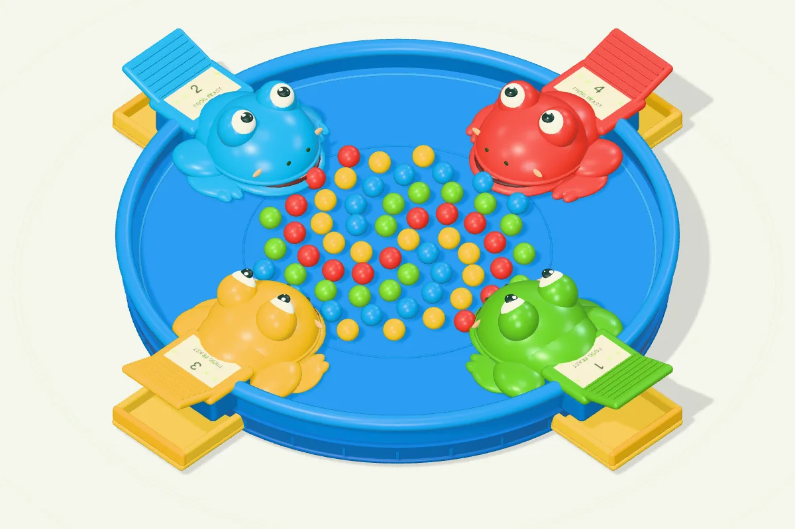

青蛙吃豆豆
免费在线玩青蛙吃豆豆：按住自己的青蛙，和朋友同时抢吃 60 颗彩豆。支持 2 至 4 个真人或机器人席位、多点触控与键盘操作，每颗 1 分，抢完自动结算，手机、平板、电脑打开即玩。
2–4 人同屏游玩，约 15–60 秒一局。

玩法
- 2 至 4 个席位同时抢豆，所有青蛙均可选择真人或机器人。
- 倒计时结束后按压自己的青蛙伸头吃豆，长按连续动作，每次最多吃 3 颗。
- 只有嘴内实际抓到的豆子才得分，每颗 1 分；盘底自动轻摇，让剩余豆子继续滚动。
- 60 颗彩豆抢完即结算，分数最高者获胜，并列最高则共同获胜。
适合喜欢按压抢豆玩具、想和家人朋友同时玩一局短局派对游戏，或独自挑战机器人手速的玩家。